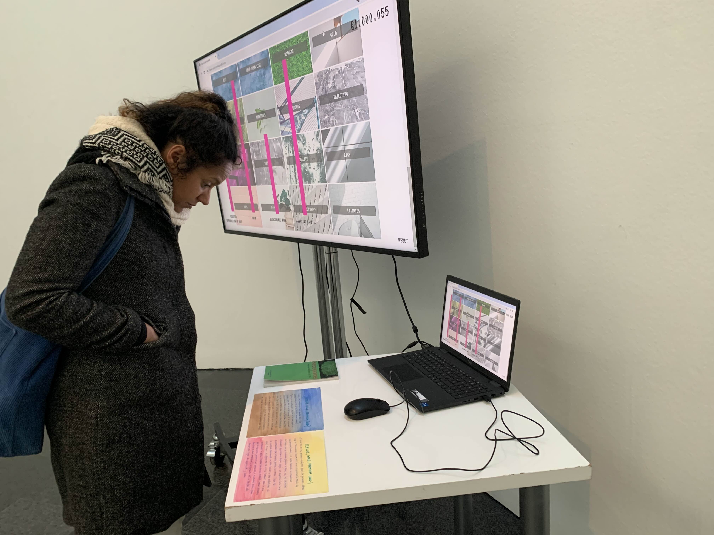

It's difficult to be baroque more difficult to be opaque

A collaborative project with Criticaldías, this installation-action points to the role of Catalunya and Spain in the invention of racial labeling in science and medicine. It combined archival documents with dream maps, URLs and animation to weave a circular, oneiric narrative that imagines what other forms of memory and connection are possible. The installation took place on 5th February, 2024, as part of Lydia Ourahmane's 108 days program at MACBA, Barcelona.

